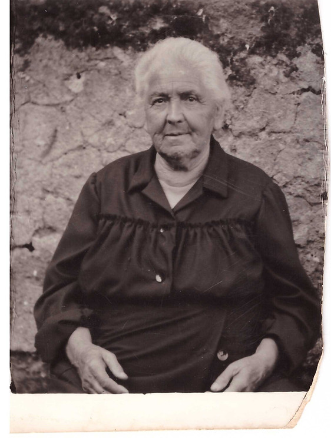

The Story of Pummarola
The Story of Pummarola
The aroma of simmering pomodoro, freshly trimmed basil, and rosemary-crusted focaccia bread wafted through the streets of Naples, Italy every Sunday evening. The oak-paneled windows of Rosa Donna Rummo’s home were left open during her regular Sunday feasts – an invitation for her friends, family, and neighbors to stop by and gather for a delicious meal. She was a staple of the town – traveling through the winding, weathered Italian roads in her crimson Fiat 500. Passersby would comment that the tiny red car looked like a “pummarola,” which means "tomato" in the Neapolitan dialect. Rosa had an idea. She wanted to share her love of cooking with more than just her family and friends. She was not one to sit still.
Rosa founded Pummarola in 1968, a few blocks from her home in Naples, Italy. For two decades, her restaurant was brimming with locals and tourists alike. The red Fiat 500 was always spotted outside the front doors of the restaurant – a welcome sign for those who remembered the smell of the Sunday night air. After Rosa passed away, and the doors to Pummarola were locked, paintings of miniature cars and pizzas would appear on the walls outside of the restaurant.
Over forty years after Rosa’s original Pummarola was founded in Italy, her four grandchildren decided to work together to reopen Pummarola across the world. Fond memories of their Nonna’s small, lively Pizzeria inspired the four to continue her legacy. Rosa’s signature Fiat 500 can be spotted inside all of Pummarola’s locations as a tribute to their tough and beloved Nonna, along with her favorite cooking utensils and pasta makers. As their Nonna would always announce to her guests, along the walls of every Pummarola are the words, “Qui si mangia bene!”

Rosa Donna Rummo Grazie Nonna!
Videos


From the Press
Sun Sentinel
June 8th, 2023
In Honor of Italian Nonna, 4 Brothers Bring Neapolitan Family Tradition to South Florida with Pummarola Pizzeria
"The Mele brothers have landed chef Pasquale Mormile, who just won the Pizza Napoletana Division of the pizza-making competition staged in March at the 2023 International Pizza Expo & Conference in Las Vegas."
Full ArticleTime Out
December 1st, 2022
A Definitive Guide to the Best Pizza in Miami
"The vibe here is a family-friendly neighborhood cafe, the kind of place you might go weekly if it’s near you..."
Full ArticleCoral Gables Community News
September 16th, 2019
Take a Culinary Tour of Gables With New Book
"The City of Coral Gables is launching an exciting new project, a cookbook, titled A Taste of Coral Gables, A Culinary Tour and Recipes from the City Beautiful. The cookbook features famed restaurants, chefs and recipes for some of the city’s most noteworthy dishes."
Full ArticleMiami New Times
June 23rd, 2015
Pummarola: Pizza Grandma's Way in the Gables
"A 900-degree wood-burning oven fires out nine-inch pies layered with salty speck and meaty zucchini disks, but it's the calzones you want. They ooze imported buffalo mozzarella, chicken, and a fruity, fragrant pesto or savory cotto ham and milky ricotta. There's a brief pause between the blistering oven and your table. A cook opens an inch-long slit in the pocket and douses it with tangy tomato sauce and a shot of Umbrian olive oil."
Full ArticleCoral Gables Love
April 20th, 2015
Pummarola Pizzeria: Neapolitan Italian Fast Food
"All of the ingredients used at Pummarola are brought directly from Italy including the flour, the tomatoes, and the olive oil. Equipped with a brick oven set at a blazing 900 degrees, the master pizzaiolos bake pizzas in a minute flat. So if you are in the search for an authentic Neapolitan Margherita pizza, this is the place to go. It’s fast, delicious, and straight from Italy!"
Full ArticleEat Your Heart Out
February 17th, 2014
Pummarola: The Best Pizza I Have Ever Had
"Pummarola is a small street corner in Italy disguised as a restaurant in Miami. Everyone speaks Italian to you and to each other and greet you like you are an old friend. You can sit at the bar and watch them make your pizza every step of the way: dough, sauce, toppings, oven, done. Their 900 degree wood oven cooks the pizza in about 2 minutes flat and there you have a beautiful, steamy pizza in front of you."
Full ArticleShop Coral Gables
January 21st, 2014
Gables Bites: Pummarola Would Make Nonna Proud
"Top off your Neapolitan pizza with fresh ingredients like white truffle oil, eggplant, zucchini, arugula, fresh ricotta and more. Pizzas come in both a reasonable personal size, perfect for a quick work lunch, or a large sharing size. Hopefully, this bright young restaurant on the Coral Gables scene will last just as long as the original Pummarola. We’re sure their nonna would be proud."
Full ArticleMiami New Times
December 6th, 2013
Pummarola "Pizza Bar" Opens in Coral Gables Today
"Short of hopping a plane to Naples -- Italy, that is, not Florida's sleepy west-coast town -- it's not always easy to find authentic Neapolitan pizza. But at the new Coral Gables eatery Pummarola, they're all about Italian tradition."
Full ArticleJeff Eats
April 13th, 2013
Pummarola Boca Raton
"Let me start by saying–Pummarola’s food was fabulous."
"…I’ll even go on record and tell you, that Pummarola’s food is as good if not better than the stuff served at most of South Florida/elsewhere’s “upscale” Italian joints."
"Trust me on this one…the “sampled” margherita pizza, chicken milanese panuozzo, fettuccine bolognese, gnocchi alfredo, spaghetti & meatballs, eggplant parmigiana–were absolutely positively delicious. Like Jeff Eats said 14 seconds ago, this joint’s food could easily go head to head with the best Italian stuff out there."
Full Article